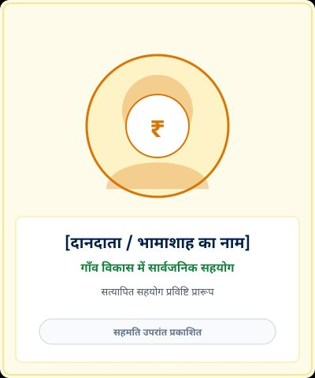

बामरला ग्राम डिजिटल पोर्टल
अपने गाँव की जानकारी, सरकारी योजनाएँ, जनप्रतिनिधि और जनसुविधाएँ अब एक ही जगह।
नवीनतम सूचनाएँ एवं ग्राम पट्ट
ग्राम पंचायत एवं जनप्रतिनिधि
पूरा विवरण व वार्ड सदस्य देखें →बामरला क्षेत्र की ग्राम पंचायतों के निर्वाचित प्रतिनिधि। (नोट: नाम प्रविष्टि वेबसाइट संस्थापक द्वारा प्रदान की गई है, सरकारी अभिलेखों से वर्तमान कार्यकाल सत्यापन प्रक्रियाधीन है)।
श्री धोधा खान
श्री पेमा राम मेगवाल
प्रमुख सरकारी योजनाएँ एवं ऑनलाइन सेवाएँ
सभी 10+ योजना श्रेणियाँ देखें →राजस्थान जन सूचना पोर्टल
PM-KISAN सम्मान निधि
मनरेगा (MGNREGA)
सामाजिक सुरक्षा पेंशन
प्रधानमंत्री आवास योजना (ग्रामीण)
राजस्थान SSO एवं ई-मित्र पोर्टल
गाँव की प्रमुख जनसुविधाएँ
विस्तृत सुविधा डायरेक्टरी →राजकीय विद्यालय
राजकीय उच्च माध्यमिक विद्यालय बामरला एवं निकटवर्ती प्राथमिक शालाएँ।
SBI बैंक शाखा
भारतीय स्टेट बैंक (SBI) बामरला शाखा, खाता सेवाएँ एवं किसान क्रेडिट कार्ड (KCC)।
स्वास्थ्य केंद्र
उप स्वास्थ्य केंद्र बामरला, एएनएम-आशा कार्यकर्ता व सेड़वा सामुदायिक स्वास्थ्य केंद्र।
डाकघर (Post Office)
शाखा डाकघर बामरला (पिन 344704), स्पीड पोस्ट, बचत खाता व सुकन्या योजना।
गाँव के विकास कार्य (रजिस्टर सारांश)
संपूर्ण विकास कार्य रजिस्टर देखें →| परियोजना नाम | स्थान / वार्ड | श्रेणी | विभाग / योजना | वर्तमान स्थिति | सत्यापन टिप्पणी |
|---|---|---|---|---|---|
| सीसी रोड व नाली निर्माण | मुख्य बस स्टैंड से राजकीय उच्च माध्यमिक विद्यालय | सड़क निर्माण | ग्राम पंचायत / राज्य वित्त आयोग | पूर्ण | सार्वजनिक उपयोग में चालू (दस्तावेज सत्यापन प्रतीक्षारत) |
| पेयजल पाइपलाइन एवं GLR टंकी | ढाणी क्षेत्र एवं मुख्य बस्ती | पेयजल आपूर्ति | जल जीवन मिशन (JJM) / PHED | प्रगतिरत | घरेलू नल कनेक्शन कार्य क्रियान्वयन चरण में |
| विद्यालय चारदीवारी व अतिरिक्त कक्ष | रा.उ.मा.वि. बामरला परिसर | शिक्षा अवसंरचना | समग्र शिक्षा अभियान (समसा) | पूर्ण | विद्यालय परिसर को सुरक्षित किया गया |
| सौर ऊर्जा स्ट्रीट लाइट स्थापना | प्रमुख सार्वजनिक चौक व चौराहे | ऊर्जा व प्रकाश | Panchayat Samiti Sedwa | आंशिक पूर्ण | रखरखाव समीक्षाधीन |
गाँव के भामाशाह एवं जनसहयोग
सभी भामाशाह विवरण देखें →गाँव के सार्वजनिक विकास, विद्यालय उन्नयन, गौशाला, पेयजल एवं सामुदायिक हित में स्वैच्छिक योगदान करने वाले महानुभावों का आदरपूर्वक अभिलेखीकरण।

[दानदाता का नाम प्रविष्टि]
[ग्राम सहयोग समिति / दानदाता]
[ग्राम युवा मंडल / भामाशाह]
उपयोगी नागरिक सेवाएँ एवं संपर्क शॉर्टकट
गाँव का भूगोलीय नक्शा (Google Maps)
Google Maps पर अलग विंडो में देखें →इस डिजिटल ग्राम पहल के निर्माता
स्वैच्छिक जनहित प्रयास
विकाश कुमार (Vikash Kumar)
“विकाश कुमार द्वारा इस डिजिटल ग्राम पोर्टल का निर्माण इस उद्देश्य से किया जा रहा है कि गाँव के लोगों को आवश्यक सार्वजनिक जानकारी खोजने के लिए अलग-अलग जगह भटकना न पड़े। यह पहल वर्तमान में उनके स्वयं के समय और संसाधनों से विकसित की जा रही है।”